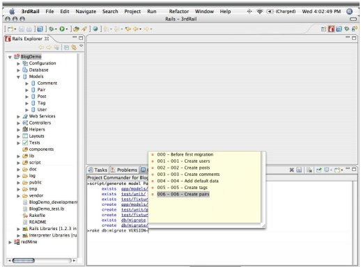

CodeGear brand
and product names are service marks, trademarks or registered trademarks of Borland Software
Corporation in the United States and other countries.
CodeGear brand
and product names are service marks, trademarks or registered trademarks of Borland Software
Corporation in the United States and other countries.
CodeGear Commanders let you run Ruby on Rails commands from within 3rdRail. The Project Commander lets you run commands on a project that is open in 3rdRail. The Workspace Commander lets you run commands on a project that is not open.
Open a CodeGear Commander from the menu or use Quick Keys.
For a complete list of commands, type help in the Commander.
Productivity features available in the CodeGear Commanders include:
The Project Commander gives you a familiar command-line interface to your Ruby on Rails project. As you write and execute commands, the Project Commander shows results and hyperlinks to the files created by the commands. It provides context-sensitive command, parameter, and option completion to help you execute commands more quickly. This screenshot shows Project Commander results and code completion:

The Project Commander shows results of actions performed by the 3rdRail Wizards, allowing you to switch between a Wizard interface and a command line interface as needed.
For more information, see this video: The Project Commander and Rails Console.
The Workspace Commander is handy for creating a new Rails application and for working with RubyGems.
CodeGear brand
and product names are service marks, trademarks or registered trademarks of Borland Software
Corporation in the United States and other countries.